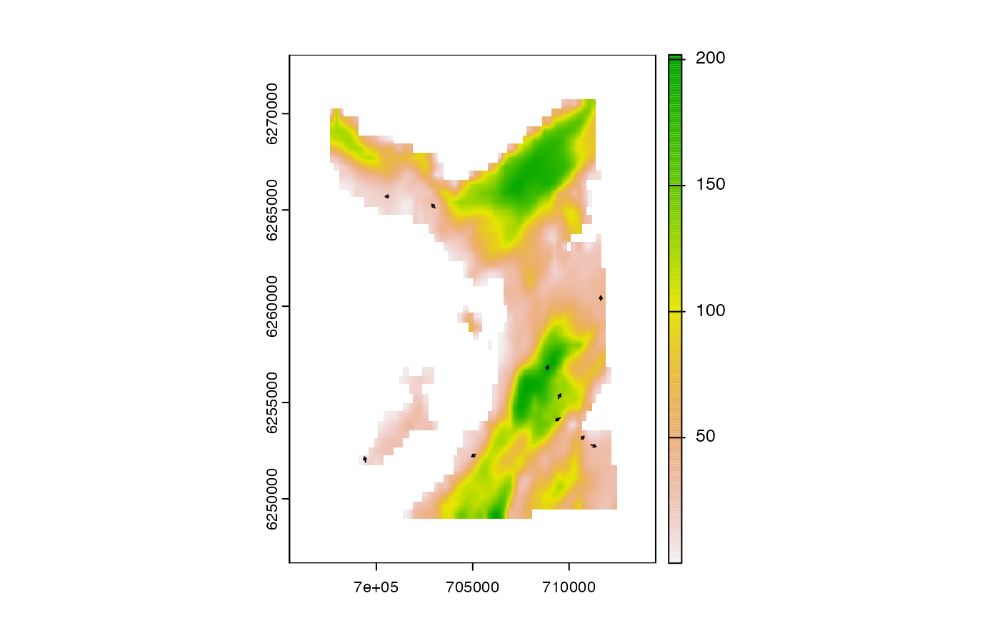

These functions are example movement models, of the kind required by .kick in pf_forward_*().
pf_kick(
.particles,
.obs = NULL,
.t = NULL,
.bathy = NULL,
.sim_length = sim_length,
.sim_angle = sim_angle_rw,
.lonlat = FALSE,
...
)A data.table, from pf_forward_*(), that defines the current particle samples:
cell_now is an integer vector of cell IDs;
x_now is a numerical vector of x coordinates;
y_now is a numerical vector of y coordinates;
(optional) The .obs data.table, an integer that indexes .obs and the .bathy SpatRaster (see pf_forward_1()). These inputs are unused in this template movement model but supported within pf_forward_*().
Functions and additional arguments that simulate step lengths and turning angles. The first argument of each function should be the number of step lengths/turning angles to simulate (defined internally).
A logical variable that defines whether or not coordinates are longitudes/latitudes.
The function returns a data.table, as supplied, with two additional columns:
x_next---the x coordinate of the next proposal location(s);
y_next---the y coordinates of the next proposal location(s);
This template movement model is a biased random walk. Step lengths are simulated from a truncated Gamma distribution via sim_length(). Turning angles are simulated from a wrapped normal distribution via sim_angle_rw().
These function are used to streamline examples and do not represent a generically suitable model.
The functions do not check user inputs.
# Load packages
require(graphics)
require(data.table)
require(dtplyr)
require(dplyr, warn.conflicts = FALSE)
# Set seed
set.seed(1)
# Define hypothetical `.particles` data.table
p <-
dat_gebco() |>
terra::spatSample(size = 10L, cells = TRUE, xy = TRUE, as.df = FALSE,
na.rm = TRUE) |>
as.data.table() |>
select(cell_now = cell, x_now = x, y_now = y) |>
as.data.table()
# Kick particles into new locations
p <- pf_kick(p)
# Visualise current & next locations
terra::plot(dat_gebco())
arrows(x0 = p$x_now, x1 = p$x_next,
y0 = p$y_now, y1 = p$y_next,
length = 0.02)
